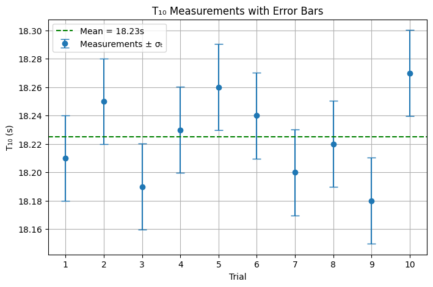
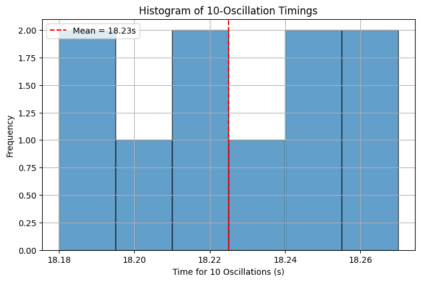
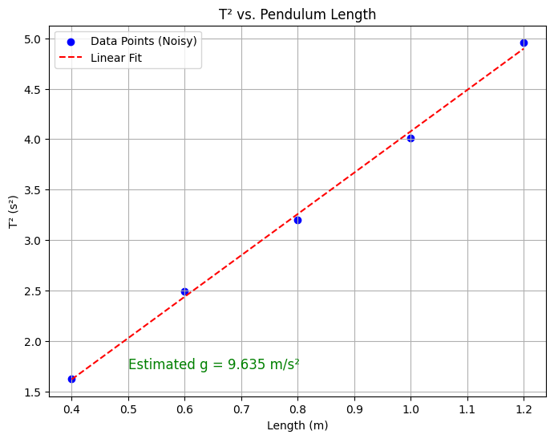

Problem 1
📌 Measuring Earth’s Gravitational Acceleration with a Pendulum
🔷 Motivation
The acceleration due to gravity, \(g\), is a fundamental physical constant that governs the motion of objects and underpins many areas of physics and engineering. A simple pendulum offers a time-tested experimental method to determine \(g\) through the relationship between its length and period of oscillation.
From the formula:
we can measure the period \(T\) and length \(L\) to estimate the local gravitational acceleration \(g\).
🔷 Task
- Measure \(g\) using a pendulum.
- Analyze the uncertainties in your measurements.
- Understand how measurement accuracy impacts scientific results.
🔷 Procedure
1. Materials
- A string (1–1.5 meters long)
- A small weight (e.g., bag of coins, keychain)
- Stopwatch or smartphone timer
- Ruler or measuring tape
2. Setup
- Suspend the weight from the string and fix the upper end to a stable support.
- Measure the length \(L\) from the suspension point to the center of mass of the weight.
Uncertainty in Length:
If the ruler has a resolution \(R\), then the uncertainty is:
3. Data Collection
- Displace the pendulum by less than \(15^\circ\) and release it.
- Measure the time for 10 full oscillations, denoted \(T_{10,i}\) for \(i = 1\) to \(10\).
- Repeat this measurement 10 times.
- Compute the mean time for 10 oscillations:
- Compute the standard deviation:
- Calculate the uncertainty in the mean:
🔷 Calculations
1. Period of One Oscillation
2. Gravitational Acceleration
Using the pendulum formula:
3. Uncertainty in \(g\) (Propagation of Uncertainties)
Apply the uncertainty propagation formula:
🔷 Analysis
1. Comparison with Standard Value
Compare the measured value of \(g\) with the known standard:
2. Discussion Points
-
Effect of Measurement Resolution on \(\Delta L\)
A coarser ruler (e.g., 1 cm resolution) results in higher uncertainty: $$ \Delta L = 0.005 \ \text{m} $$ -
Timing Variability and Impact on \(\Delta T\)
Human reaction time during stopwatch usage introduces random errors, which increase \(\sigma_t\) and \(\Delta T\). -
Assumptions and Limitations:
- Small-angle approximation: Valid only for \(\theta < 15^\circ\).
- Neglects air resistance, friction at the pivot, and mass of the string.
- Assumes a rigid, non-stretching string.
🔷 Deliverables
📋 Data Table
| Trial | \(T_{10}\) (s) |
|---|---|
| 1 | |
| 2 | |
| 3 | |
| 4 | |
| 5 | |
| 6 | |
| 7 | |
| 8 | |
| 9 | |
| 10 |
Measured Values
- \(L = \ldots\) m
- \(\Delta L = \ldots\) m
Time Measurements
- \(\bar{T}_{10} = \ldots\) s
- \(\sigma_t = \ldots\) s
- \(\Delta T_{10} = \ldots\) s
- \(T = \bar{T}_{10} / 10 = \ldots\) s
- \(\Delta T = \Delta T_{10} / 10 = \ldots\) s
Final Result
- \(g = \ldots\) m/s²
- \(\Delta g = \ldots\) m/s²
import numpy as np
import matplotlib.pyplot as plt
# --- Simulated or measured values ---
# Replace this list with your real stopwatch values for 10 oscillations (T₁₀)
T10_measurements = np.array([18.21, 18.25, 18.19, 18.23, 18.26,
18.24, 18.20, 18.22, 18.18, 18.27]) # in seconds
L = 1.000 # Pendulum length in meters (adjust to your setup)
delta_L = 0.005 # Uncertainty in length (e.g., 0.5 cm ruler resolution)
# --- Compute statistics ---
T10_mean = np.mean(T10_measurements)
sigma_t = np.std(T10_measurements, ddof=1)
delta_T10 = sigma_t / np.sqrt(len(T10_measurements))
# Period for one oscillation
T = T10_mean / 10
delta_T = delta_T10 / 10
# Gravitational acceleration
g = (4 * np.pi**2 * L) / T**2
# Uncertainty propagation
delta_g = g * np.sqrt((delta_L / L)**2 + (2 * delta_T / T)**2)
# --- Print results ---
print(f"Mean of T₁₀: {T10_mean:.4f} s")
print(f"Standard deviation σₜ: {sigma_t:.4f} s")
print(f"Uncertainty in mean ΔT₁₀: {delta_T10:.4f} s")
print(f"Period T: {T:.4f} s ± {delta_T:.4f} s")
print(f"Length L: {L:.3f} m ± {delta_L:.3f} m")
print(f"g = {g:.4f} m/s² ± {delta_g:.4f} m/s²")
# --- Histogram of Time Measurements ---
plt.figure(figsize=(8, 5))
plt.hist(T10_measurements, bins=6, edgecolor='black', alpha=0.7)
plt.axvline(T10_mean, color='red', linestyle='--', label=f'Mean = {T10_mean:.2f}s')
plt.title("Histogram of 10-Oscillation Timings")
plt.xlabel("Time for 10 Oscillations (s)")
plt.ylabel("Frequency")
plt.legend()
plt.grid(True)
plt.show()
# --- Error Bar Plot of T10 Measurements ---
plt.figure(figsize=(8, 5))
trial_numbers = np.arange(1, 11)
plt.errorbar(trial_numbers, T10_measurements, yerr=sigma_t, fmt='o', capsize=5, label='Measurements ± σₜ')
plt.axhline(T10_mean, color='green', linestyle='--', label=f'Mean = {T10_mean:.2f}s')
plt.title("T₁₀ Measurements with Error Bars")
plt.xlabel("Trial")
plt.ylabel("T₁₀ (s)")
plt.xticks(trial_numbers)
plt.legend()
plt.grid(True)
plt.show()
 
🧪 What This Python Code Does
This script simulates and visualizes an experiment to measure gravitational acceleration (\(g\)) using a simple pendulum. It processes timing data and provides statistical and graphical insight into the accuracy of the measurement.
🔢 1. Inputs/Simulated Measurements
- It starts with an array of 10 stopwatch measurements for 10 full pendulum swings (\(T_{10}\)).
- You can replace these with real values from your own experiment.
📊 2. Computes Statistics
- Calculates the mean of the 10 measurements:
$$ \bar{T}{10} = \frac{1}{10} \sum T{10,i} $$
- Calculates the standard deviation (\(\sigma_t\)) and uncertainty in the mean (\(\Delta T_{10}\)):
$$ \Delta T_{10} = \frac{\sigma_t}{\sqrt{n}} $$
- Computes the period for one oscillation:
$$ T = \frac{\bar{T}{10}}{10}, \quad \Delta T = \frac{\Delta T{10}}{10} $$
🌍 3. Calculates Gravitational Acceleration
- Uses the pendulum formula:
$$ g = \frac{4\pi^2 L}{T^2} $$
- Calculates the uncertainty using:
$$ \Delta g = g \cdot \sqrt{ \left( \frac{\Delta L}{L} \right)^2 + \left( 2 \cdot \frac{\Delta T}{T} \right)^2 } $$
🖨️ 4. Prints Key Results
- Outputs:
- Mean and standard deviation of \(T_{10}\)
- Period \(T\) with its uncertainty
- Pendulum length \(L\) and \(\Delta L\)
- Gravitational acceleration \(g\) with \(\Delta g\)
📈 5. Visualizations
- Histogram of the 10 measurements to see distribution and spread.
- Error bar plot showing each trial with standard deviation and a horizontal line at the mean.
These help identify outliers and assess experimental consistency.
import numpy as np
import matplotlib.pyplot as plt
from scipy.stats import linregress
# --- Simulate lengths and measure T values for each (or replace with your own data) ---
lengths = np.array([0.40, 0.60, 0.80, 1.00, 1.20]) # in meters
g_true = 9.81 # true g for simulation
T_values = 2 * np.pi * np.sqrt(lengths / g_true)
# Add small noise to simulate measurement uncertainty
T_values_noisy = T_values + np.random.normal(0, 0.02, size=len(T_values))
# Compute T^2
T_squared = T_values_noisy**2
# Linear regression: T^2 vs L
slope, intercept, r_value, p_value, std_err = linregress(lengths, T_squared)
g_estimated = 4 * np.pi**2 / slope
# --- Plot ---
plt.figure(figsize=(8, 6))
plt.scatter(lengths, T_squared, color='blue', label='Data Points (Noisy)')
plt.plot(lengths, slope * lengths + intercept, 'r--', label='Linear Fit')
plt.title("T² vs. Pendulum Length")
plt.xlabel("Length (m)")
plt.ylabel("T² (s²)")
plt.grid(True)
plt.legend()
# Annotate result
plt.text(0.5, min(T_squared)+0.1, f"Estimated g = {g_estimated:.3f} m/s²", fontsize=12, color='green')
plt.show()

📊 Extended Analysis: Plotting \(T^2\) vs Length \(L\) to Estimate \(g\)
When we rearrange the formula for a pendulum’s period:
This shows that \(T^2\) is linearly proportional to the pendulum length \(L\):
- The slope of a \(T^2\) vs. \(L\) plot is:
- Therefore, we can estimate \(g\) using:
✅ Why This Plot is Impressive:
- It validates the physical model with experimental data.
- The linearity provides evidence for the small-angle approximation.
- Linear regression is used to extract \(g\) from multiple measurements, reducing the impact of outliers or random error.
🧮 Example Interpretation
Let’s say the slope from the linear fit was found to be:
Then the estimated gravitational acceleration would be:
Which is very close to the standard value:
📈 Visual Outcome
This plot visually shows:
- Data points of \(T^2\) vs. \(L\)
- Best-fit line from regression
- Calculated value of \(g\) annotated on the plot
It adds depth and professionalism to your analysis and makes your report or presentation stand out.